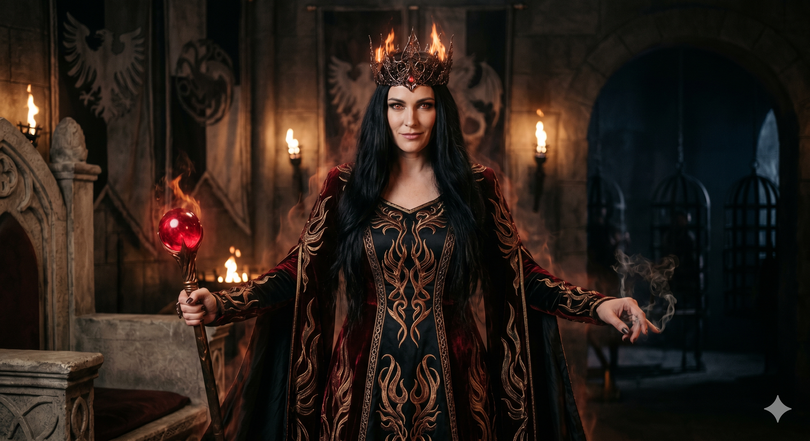

Appears in: Couch Potato Chaos, Couch Potato Crisis
Profile

-
Appears in: Couch Potato Chaos, Couch Potato Crisis
-
Aliases: Aralynn Murderjoy, Murderjoy, the Queen
-
Cross-book continuity: Central antagonist across both books.
-
Personality: Murderjoy is theatrical, sadistic, and possessed of a grandiose madness that disguises genuine strategic brilliance. She delivers monologues about power and inevitability with the flair of a stage villain, but beneath the performance is a ruthlessly pragmatic mind. She views compassion, friendship, and love as exploitable weaknesses — tools to be turned against her enemies. Her signature move is the charm spell: she doesn’t just defeat her opponents, she rewrites their loyalties. She takes particular pleasure in forcing the people who care about her captives to be the instruments of their own betrayal. She is patient, willing to wait chapters for the right moment to strike, and she never wastes a resource that can be exploited instead of destroyed. Her madness is not random — it is a governing philosophy. She believes power is the only truth and that sentiment is a disease to be cured with violence.
-
Backstory: The human queen of Zhakara, a kingdom built on coercion, slave-taking, and ruthless leveling economics. How she rose to power is not detailed in the text, but her reign is defined by one innovation: industrialised mass sacrifice. Murderjoy discovered that the respawn-and-save-point system of Etheria could be weaponised. By enslaving thousands of elves and killing them at save points repeatedly, she farms XP on a scale no individual adventurer could match, achieving an impossibly high level that makes her effectively untouchable in direct combat. She obtained the Orb of Fire, one of the four elemental orbs, and made it the centrepiece of her power — both as a weapon and as a symbol of Zhakaran dominance. Her alliance with [Captain K’her Noálin](./character-captain-k-her-no-lin.html)'s pirate fleet gave her reach beyond her borders, enabling slave raids that fed her sacrificial machine.
-
Significant story events:
- Chapter 12 — Ninja Attack (Chaos): Murderjoy’s hand is first felt through her ninja operatives from the Hidden Smog village, who abduct Princess Kiwistafel. The raid reveals the scale of the conflict — this is not a local threat but a state-sponsored operation directed from Zhakara.
- Chapter 21 — The Queen and the Pirate (Chaos): Murderjoy’s formal introduction. She meets with [Captain K’her Noálin](./character-captain-k-her-no-lin.html) to discuss slave raids and bluntly explains the atrocity behind her impossible level: the mass blood sacrifice of enslaved elves. K’her, no moral paragon himself, is her contractual partner — his fleet supplies her captives.
- Chapter 31 — Scheming Schemers and the Schemes They Scheme (Chaos): Murderjoy’s geopolitical scheming expands as her agents continue to target the party and their allies.
- Chapter 39 — Fire and Life (Chaos): Murderjoy ambushes the aftermath of the Orb of Life quest, setting the stage for the epilogue’s devastating betrayal.
- Epilogue (Chaos): Murderjoy’s most devastating personal strike. She confronts Tasha, engages her in a philosophical exchange about love and weakness, then casts Greater Charm Person to overwrite Tasha’s judgment. Under enchantment, Tasha delivers Kiwi to her. Murderjoy kills Tasha’s third life (Impulsive Tasha) and abducts Kiwi into Zhakara — ending the first book on a note of total personal defeat for the heroes.
- Devil’s Bargain (Crisis): Murderjoy consolidates her hold on Kiwi, now a prisoner in Zhakara, and begins the process of ideological conditioning.
- The Grey Room (Crisis): Murderjoy backs [Doctor Theodore Penfold](./character-doctor-theodore-penfold.html)'s horrific experiments — repeatedly killing and resurrecting Kiwi in a sealed cell to map her personality stats and find a controllable version. The Grey Room is Murderjoy’s method made literal: she doesn’t just want Kiwi’s body, she wants her will.
- Chapters 18–24 (Crisis): Murderjoy personally pressures Kiwi into collaboration, arguing about history, war, and inevitability. Her patience and rhetorical skill make her a more persuasive jailer than any prison wall.
- Chapter 29 (Crisis): Murderjoy achieves her goal: Kiwi, now conditioned, serves as her adviser and a living symbol of ideological victory — a crown princess who has been “converted” to the enemy’s worldview.
- Chapter 30 — The End of Zhakara (Crisis): The climactic battle. Tasha’s group assaults the war camp. The Orb of Life is used to break the charm on Kiwi. In the chaos, Captain K’her — her former ally, now turned enemy — kills Murderjoy. Her death triggers the collapse of Zhakara as a kingdom. The industrialised sacrifice machine she built dies with her.
-
Notable Quotes:
“Every day, I kill thousands of elven slaves. This is how I’ve gained a higher level than anyone else in Etheria, through the mass blood sacrifice of my enemies.” — Chapter 21, The Queen and the Pirate. Murderjoy bluntly explains the atrocity behind her impossible power level.
“That’s exactly what I expect.” — Epilogue (Chaos). Murderjoy coolly answers Tasha’s disbelief that she would ever betray Kiwi, immediately before casting her charm spell.
“Love makes us weaker.” (paraphrased from the exchange where Tasha counters with “Love makes us stronger, not weaker.”) — Epilogue (Chaos). Murderjoy’s cynical philosophy of power, which she uses to justify turning Tasha’s emotions against her.
-
Relationships:
- [Captain K’her Noálin](./character-captain-k-her-no-lin.html): Former ally and contracted partner. K’her’s pirate fleet supplied her slave raids. Their partnership was transactional — K’her had “sold his conscience many years ago.” By Crisis, K’her has turned against her and ultimately kills her during the final battle.
- Princess Kiwistafel Questgiver: Primary target and captive. Murderjoy obsessively pursues Kiwi across both books, not just for political leverage but as a demonstration of power — converting the enemy’s crown princess into an ideological symbol.
- [Tasha Singleton](./character-tasha-singleton.html): Personal nemesis. Murderjoy identifies Tasha’s emotional attachments as vulnerabilities and weaponises them directly, charming Tasha to betray Kiwi and killing one of her lives. Tasha’s guilt over this drives the entire plot of Crisis.
- [Doctor Theodore Penfold](./character-doctor-theodore-penfold.html): Key subordinate. Murderjoy provides the prisoners and political cover for Penfold’s personality-mapping experiments in the Grey Room. Their collaboration represents the intersection of state power and mad science.
- Karinla: Indirect subordinate through Penfold. The spider-woman healer assists with executions and surgical experiments on Murderjoy’s prisoners.
- Gelkorus: Court time mage. Useful but distrusted — his failures leave him in precarious standing within her regime.
- [Trista Twinklebottom](./character-trista-twinklebottom.html): Contractor. The ninja leader and her Hidden Smog village carry out kidnapping operations on Murderjoy’s behalf.
- King Iolo / Questgivria: Geopolitical rival. Murderjoy’s slave raids and assassination attempts are directed at destabilising the elven kingdom.
-
References: Couch Potato Chaos: Chapter 21 - The Queen and the Pirate, Chapter 31 - Scheming Schemers and the Schemes They Scheme, Chapter 39 - Fire and Life, Epilogue | Couch Potato Crisis: Devil’s Bargain, Tasha’s Bad Day, The End of Zhakara, The Gathering, The Grey Room, The Sorceress of the South